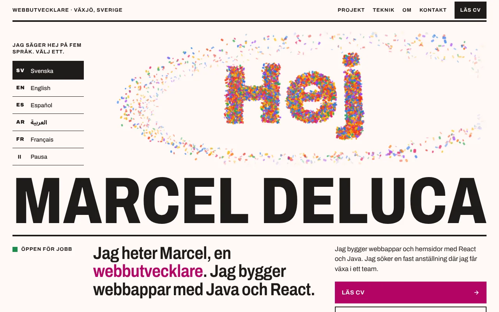
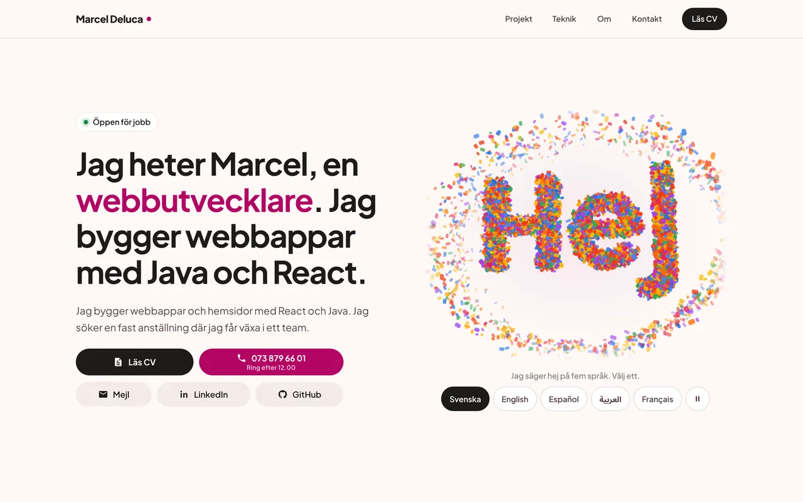
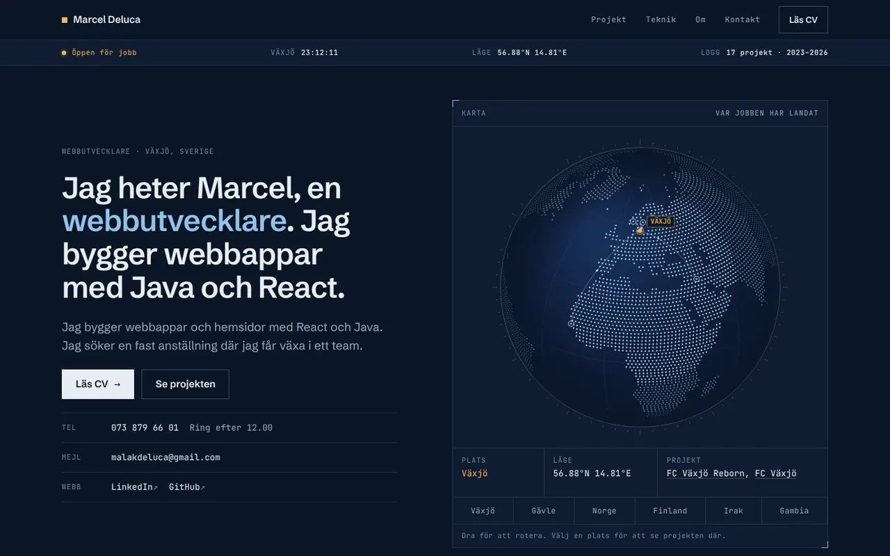
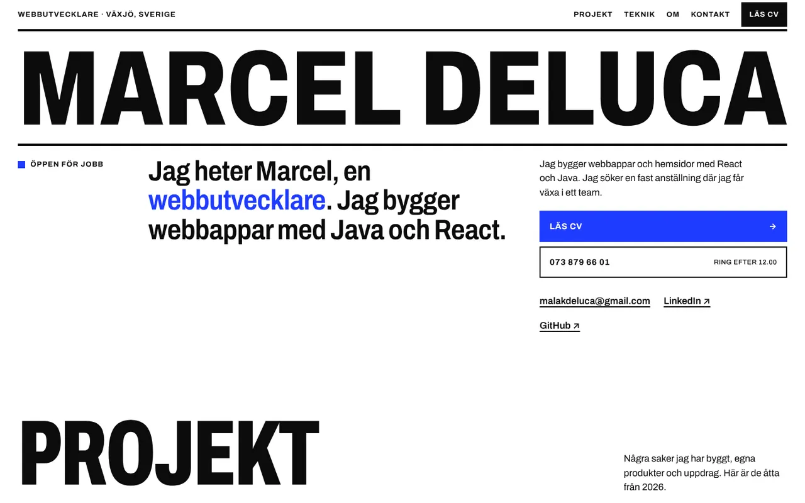

-

Ny · Konfetti + Affisch
Festaffisch
Affischens stora typografi och 3D-galleri, i Konfettis varma färger.
- Detalj
- Hälsningen i partiklar står över namnet, och bokstäverna i namnet reagerar på muspekaren.
- Känsla
- Grafisk och självsäker, men varm.
Öppna Festaffisch →
-

Konfetti
Ljus och varm, närmast dagens sida. Strösslet från nuvarande hero har blivit levande.
- Detalj
- Tusentals partiklar i WebGL som formar en hälsning på dina fem språk.
- Känsla
- Mjuk, vänlig, lekfull.
Öppna Konfetti →
-

Kontrollrum
Mörk och teknisk, som en instrumentpanel. Projekten visas som en tät logg.
- Detalj
- En 3D-glob som visar var kunderna finns och som följer projektlistan.
- Känsla
- Precis, lugn, ingenjörsmässig.
Öppna Kontrollrum →
-

Affisch
Vitt, svart och en blå färg. Typografin gör jobbet, med namnet från kant till kant.
- Detalj
- Projektbilderna i ett 3D-galleri i ren CSS och bokstäver som reagerar på muspekaren.
- Känsla
- Rak, självsäker, grafisk.
Öppna Affisch →